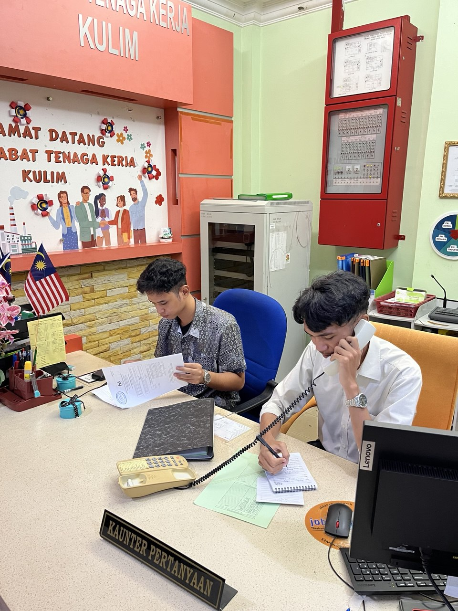
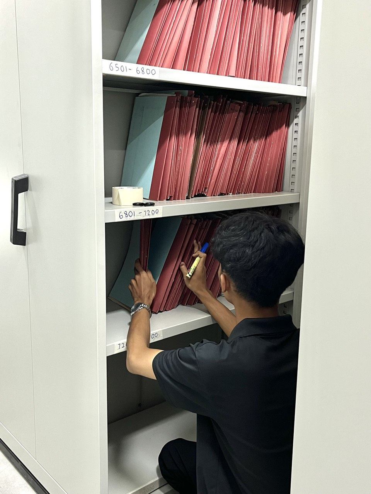
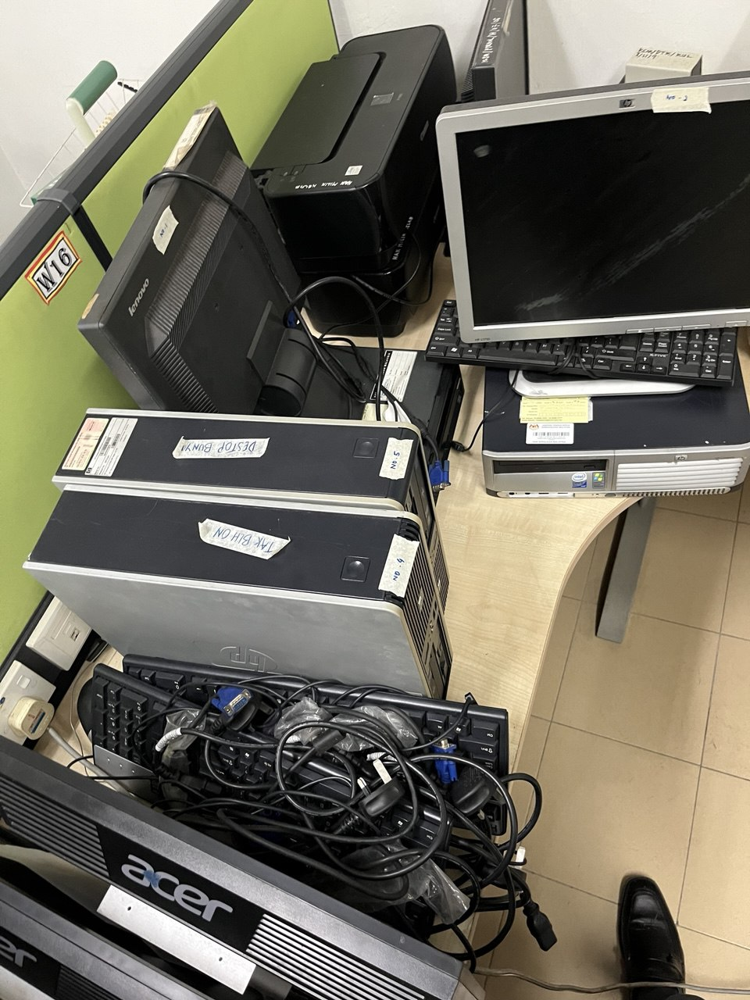
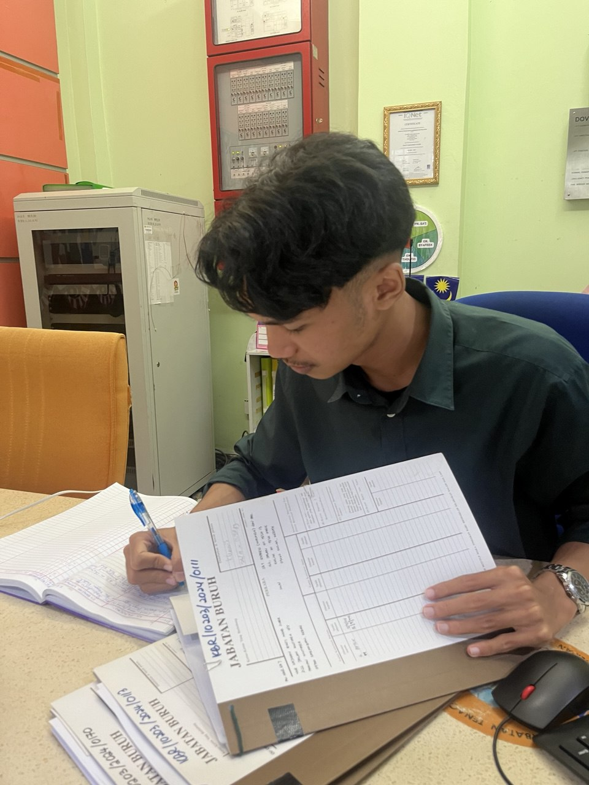
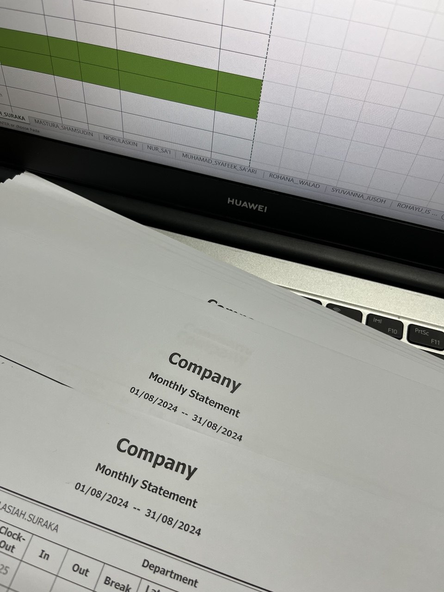
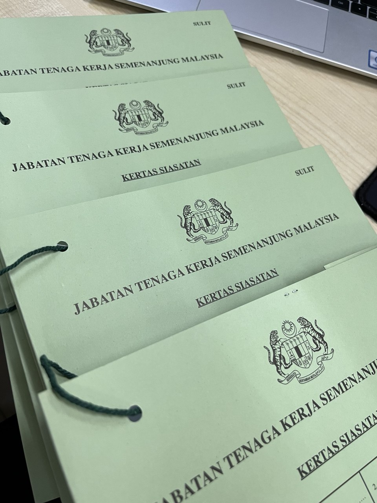

Department of Labour Kulim (Jabatan Tenaga Kerja Kulim)
is a government entity under the Ministry of Human Resources Malaysia located at Lot 3, Seksyen 39, Jln Pondok Labu, 09000 Kulim, Kedah.
Under the same administration of the headquarter in Putrajaya, Department of Labour Peninsular Malaysia uphold the labor standards and
protect the workers’ rights. It ensures fair employment practices across Peninsular Malaysia in accordance with the labour law.
Click Here to visit Jabatan Tenaga Kerja Semenanjung Malaysia
Customer Service
Here is the picture of me answering calls.
Filing
This is when I reorganize the vault room.
Machine Assesment
This is when I evaluate monitors, CPUs and other equipment before disposal.
Registering Files
All file movements should be registered in log for easy retrieval.
Completing Report
Compiling staf member monthly thumbrpint system statement for attendance report.
Investigation Files
Helped preparing investigation files for labour cases.
Contact Me
Email: haziqhazwan1106@gmail.com
Follow Me

MUHAMMAD HAZIQ HAZWAN BIN ZAHARI. All rights reserved.